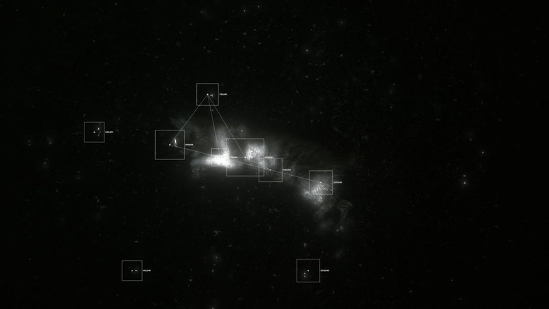
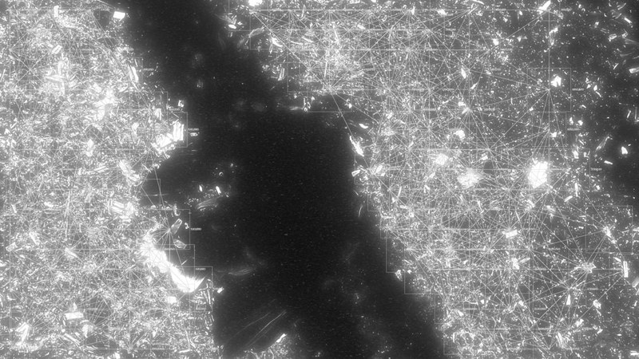

Time Never Tires of It


Time Never Tires of It2026
The bodies of a cat and a bird. One should have chased the other, but they were dead. So I began to observe, until everything lost its order. Just as time does to us.


The bodies of a cat and a bird. One should have chased the other, but they were dead. So I began to observe, until everything lost its order. Just as time does to us.